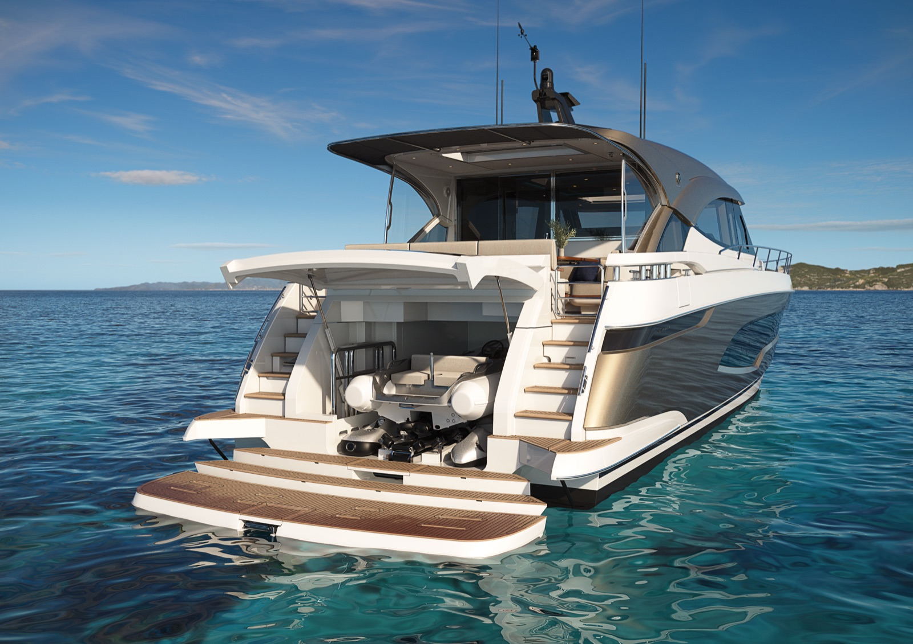
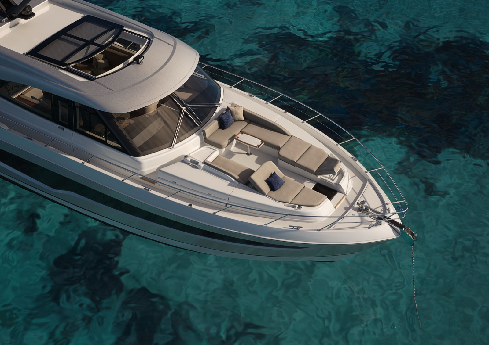
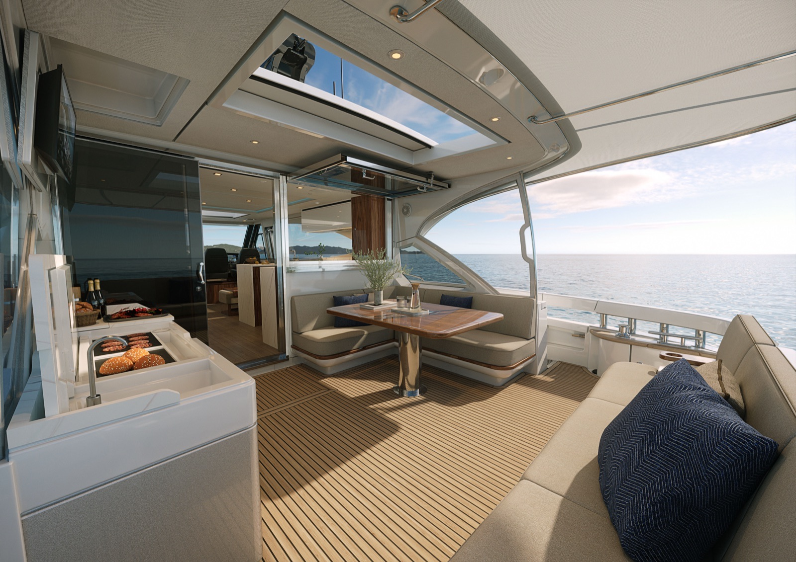
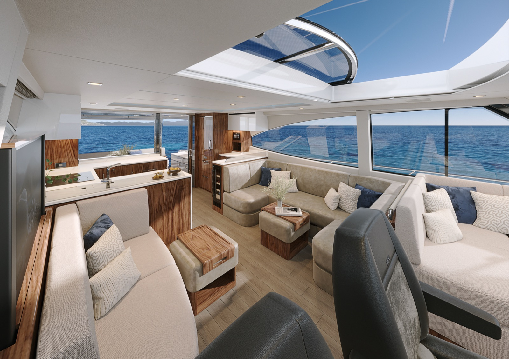
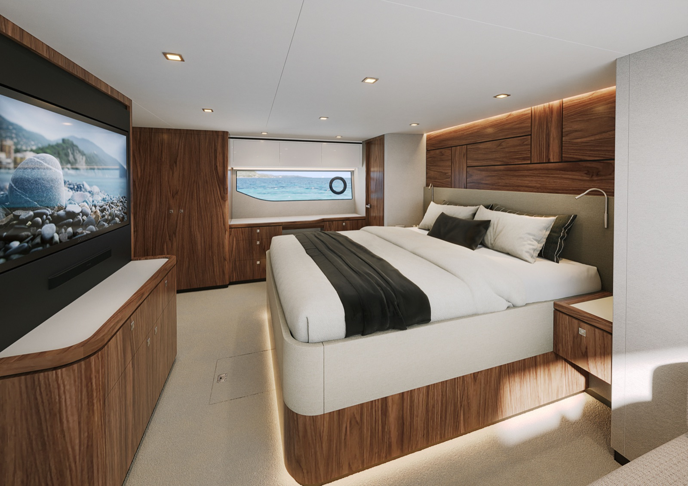
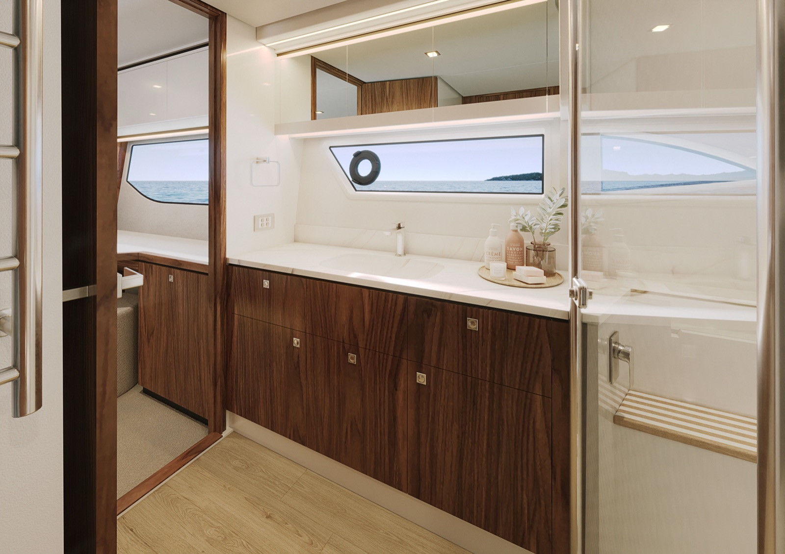

FOR IMMEDIATE RELEASE
World Premiere - Riviera announces the exceptional new 6200 Sport Yacht

Two decades have passed since Australia’s Riviera announced the World Premiere of their innovative 3600 Sport Yacht. Back in 2005, Riviera’s Sport Yacht concept was ahead of its time and the 3600 won many awards.
As Riviera’s Sport Yacht design grew in popularity, larger, more luxurious models were created and the 3600 concept ultimately evolved into Riviera’s world-class Sport Yacht Platinum Edition Collection.
With today’s announcement of the 6200 Sport Yacht, Riviera brings another visionary design to breathtaking reality.
Making the announcement, Riviera Australia owner Rodney Longhurst shared Riviera’s Sport Yacht design philosophy, “it embodies four essentials: timeless styling, luxurious single-level living, effortless blue-water performance and ease of operation.” he said.
He added “our new Sport Yacht, the 6200 is truly outstanding by any measure, reflecting Riviera’s leading-edge boat building expertise and more than 45-years heritage launching over 6,300 handcrafted, luxury motor yachts.
“I am so proud of our Riviera team, and while you may think we’re a little biased, we believe this new 6200 Sport Yacht is pure magic.”
Bigger is Always Better
The 6200 Sport Yacht offers so much more than comparable boats of similar length. All the additional space, features and extra amenity are made possible by Riviera’s new generation hull design.
Imagine entertaining family and friends on the expansive all-seasons aft deck complete with its own alfresco galley. Or soaking up the sun while relaxing on the lounges and sunbeds on the forward deck. The main galley is gourmet level and superbly equipped with an array of premium appliances. There are three sumptuous lounges in the saloon including a second dining setting with a fold-away table.
Choose three or four staterooms on the accommodation deck with three ensuite bathrooms and a magnificent full-beam master suite. There’s also a utility room/crew cabin with a dedicated laundry, and a generous tender garage designed to stow all your water sport toys and equipment. The 6200 Sport Yacht has all this and more, plus the practicality of a full-height engine room with excellent access and serviceability.
Platinum Edition
Platinum Edition means superior appointments and amenity, greater refinement and luxury, gleaming colour palettes and aesthetics.
Welcome Aboard
The impressively large, teak-laid boarding platform makes stepping aboard safe and easy. Equally impressive are the teak-laid steps either side of the tender garage leading up to the aft deck.
The Riviera design team has created a versatile electro-hydraulic swim platform for the 6200 Sport Yacht that articulates into steps as it is lowered below the water. And for raised fixed jetties there are port and starboard wing doors on the aft deck for easy, direct access.
Steps to the Beach

Lower the swim platform in a quiet anchorage to effectively create a private beach with a step to sit on - perfect for children, watercraft, or just a fun way to cool down on a hot summer’s day...
Easy Tender Launch and Retrieval
The descending steps of the swim platform combine with an efficient roller and winch system that will gently launch and retrieve a 3.6 metre tender with outboard attached.
Tender and Toys Garage
As well as a 3.6 metre RIB, the tender garage keeps everything shipshape after a day’s activities. There’s ample space for two Sea Bobs, a standup paddle board, a Scanstrut air compressor station for inflatables, and various other diving, snorkelling and fishing gear. Enjoy boating in style with all the water sport toys neatly stowed.
Alfresco Aft Deck
With the choice of a short or long hardtop, the aft deck is the alfresco dining and entertaining centre of the 6200 Sport Yacht. A plush lounge extends across the width of the aft deck, always a popular spot whilst underway or at anchor.
Forward to starboard is a very generous L-shaped lounge dining area with a handcrafted, folding timber table that comfortably seats a larger dinner party by adding occasional chairs or ottomans.
The aft deck on the 6200 Sport Yacht boasts a very capable alfresco entertainer’s galley complete with side-by-side BBQ grill and hotplate, extractor fan, two stainless-steel refrigeration drawers, an icemaker and a wet bar with solid surface benchtop, sink, mixer and bin.
An electric blind on the long hardtop lowers to the top of the aft lounge at the press of a button to shield the afternoon sun and together with tinted glass quarter panels adds more privacy and weather protection.
For those important moments that must be seen and shared live an LED Smart TV lower into place at the push of a button.
And to take full advantage of magic moments shared on the aft deck, an impressive electric sunroof glides open to invite fresh air, the warmth of the sun or the sparkle of the stars.
Wing Doors
Wing doors are a necessity in many of the world’s finest waterways, providing easy, direct access to raised, fixed jetties. Hence Riviera’s 6200 Sport Yacht has stately wing doors, port and starboard on the aft deck.

Optimizing Space
As well as handy under-seat storage, lift-up cushions on the aft lounge provide easy access to an insulated icebox and a removeable panel to access the top of the tender garage. Very helpful if you're not sure where you left your cap and sunglasses or you need to place something into the tender. Additional storage is located under the seat cushions of the L-shaped dining lounge.
Spacious Saloon and Gourmet Galley
Slide open the saloon door and open the awning window; both are engineered for great strength from tinted toughened glass and framed in polished stainless steel. Now the aft deck flows into the saloon creating one grand living and entertaining space.
The U-shaped galley of the 6200 Sport Yacht is an inspiring space, superbly equipped with premium appliances beautifully integrated into handcrafted timber joinery.
Thoughtful features include a three-element induction cooktop with removable potholders, a multifunction oven/microwave, a one-and-a quarter sink with premium mixer, solid surface waterfall benchtops, ample storage, a corner pantry, rangehood and a dishwasher.
Extended time aboard demands appropriate refrigeration which is why the galley is served by a full-height refrigerator with two freezer drawer units below. Alongside is an elegant bar/serving station with two refrigeration drawers, a wine cooler and a drinks cabinet for bottles and glassware.
Moving forward, the 6200 saloon is an expansive, luxurious sanctuary for socializing and relaxing. Portside is a sumptuous U-shaped dining lounge with an innovative solid timber table design that easily folds away into the lounge when not required.
A matching sofa and ottoman opposite complete this stylish setting. Lower the window blinds and now the saloon becomes a cinema room with
a premium sound system and a large LED TV rising at the press of a button.
Perfect for keeping the skipper company and taking in the view is an L-shaped companion lounge on a raised platform opposite the helm.
In true motor yacht style, the saloon features a very practical starboard door for quick and easy access from the galley to the forward deck; access to the side deck to tend to mooring lines; or simply to invite a cool breeze to flow through the saloon at anchor.
A Sundeck to Entertain and Relax

The wide side decks guide you forward to a spacious entertaining sundeck with comfortable lounges, an insulated icebox for refreshments and stereo speakers for your playlist. A pair of superb sunbeds with adjustable backrests and an optional euro style awning complete the picture of relaxation heaven. So easily accessed from the side door of the saloon, this is the perfect setting for a long lunch or a sunset toast to nature’s beauty.
When it’s time to weigh anchor, the teak trimmed companion table and optional euro awning quickly stow in forward lockers.
Commanding Helm
The helm of the 6200 Sport Yacht is state-of-the-art, featuring touch-screen navigation and operation technology all designed to make your boating even easier and more pleasurable. Total control is at your fingertips and visibility is outstanding through the engineered curved glass windscreen.
Captain and companion chairs are extremely comfortable and supportive with the added luxury of hand-stitched leather The Captain’s chair is fully adjustable and the companion chair swivels 180 degrees adding extra seating to the saloon at anchor.
Fingertip Control
There are three joystick control stations on the 6200 Sport Yacht, one at the helm and two on her aft deck; one portside and the other starboard. Each joystick gives the skipper control over low-speed manoeuvring and docking.
More Liveable Space
The new generation hull design of the 6200 Sport Yacht delivers living space without compromise throughout the interior, and this is most apparent in the magnificent staterooms of the accommodation deck.
Choose three or four staterooms with three ensuite bathrooms.
Superb Master
The full-beam master stateroom is palatial. Tinted hull windows and opening ports welcome an abundance of soft natural light and fresh air to this glorious master suite with its king-size walk-around island bed and soft, plush carpeting underfoot.
Unpacking is easy with His and Hers cedar-lined hanging lockers and multiple drawer sets. To starboard is an attractive timber bureau and make-up station complete with a lift-up lid and ottoman seat. Further aft is a pull-out clothes hamper conveniently located by the entry to the ensuite bathroom.
Other luxuries include portside chaise lounge, reverse-cycle air-conditioning, designer headboard, bedside tables and a flush-mounted LED Smart TV with soundbar.

Luxe Master Ensuite
A contemporary bathroom design with space and style. Luxury appointments include a solid surface benchtop with integrated basin, a generous shower with a teak seat and frameless glass door, extractor fan, heated towel rail, reverse cycle air-conditioning and a tinted hull window with opening porthole.
Spacious VIP Stateroom
Guests will love the forward VIP stateroom. There is a sense of space and a mood of pure luxury with contemporary design, premium furnishings and the glow of natural light through tinted hull windows. Generous storage takes care of wardrobe and essentials with multiple sets of drawers, His and Hers cedar-lined hanging lockers and handy overhead lockers; the queen-size, walk-around island bed lifts easily on struts to stow luggage.
Other luxuries include a private ensuite bathroom, reverse-cycle air-conditioning, designer headboard, and plush carpets. A flush-mounted LED Smart TV with soundbar is standing by, waiting to entertain.
Portside, two Staterooms in one.
The portside guest stateroom can be two single beds or one double at the touch of a button. Flexible and practical, the inboard single berth
slides smoothly across to form a restful double. Comforts include an ensuite bathroom, reverse-cycle air conditioning, bedside cabinet, ample storage, premium carpet and a cedar-lined hanging locker.
A flush mounted LED Smart TV is an entertainment option and the large, tinted hull window with opening porthole adds to the ambiance.
Fourth Stateroom, Starboard
The starboard guest stateroom also enjoys natural light from the tinted hull window and fresh air at anchor, courtesy of an opening porthole. There are two very comfortable adult-sized single berths overlapping at 90 degrees, with ample storage, reverse-cycle air-conditioning, bedside table, premium carpet, cedar-lined hanging locker and private entry door. Guests share the ensuite bathroom of the port stateroom via the day-head entry with privacy locks.
There is an option to convert the fourth stateroom to an inviting lower lounge area, ideal as a children’s games area or quiet reading retreat.
Personalised Laundry or Crew Cabin
The utility room has a dedicated laundry with a separate washing machine, dryer and plenty of practical bench space for sorting and folding.

Access is quick and convenient through a sound-insulated, lockable door located in the master ensuite bathroom.
The crew cabin option has all the essentials including an enclosed wet head with shower wand and toilet, extraction fan, air-conditioning, even an opening
porthole. A well-equipped laundry is retained with a washing machine and dryer located below the single berth.
Access to the crew cabin is through the stern engine room entry, passing through the immaculate full height engine room and watertight door.
Innovative Options
The 6200 Sport Yacht offers an array of options including Sentinel telematics - remote systems monitoring, control and alerts, Volvo Assisted Docking system, Humphree Fins or Seakeeper stabilisation, the Starlink internet system and much more.
Advanced Safety Monitoring
The 6200 Sport Yacht features a high-resolution integrated camera system providing the skipper with single glance control through live vision of the bow anchor, aft deck, engine room, and swim platform, displayed through helm navigation screens.
Exhilarating Power
The Riviera 6200 Sport Yacht is powered by twin Volvo Penta D13 IPS 1200’s rated at 900hp (662 kW) delivering exceptional power-to-weight performance with impressive fuel economy.
Access to the full-height engine room is through one of three entry points: a stern door built into the top section of the port steps, a walkthrough watertight door in the utility room/crew cabin and a lockable hatch on the aft deck, portside.
Industry Leading Warranties
All Riviera yachts are supported with industry-leading warranties – Riviera’s two-year express and seven-year structural limited warranties. In addition, all Volvo Penta powered yachts are covered by a 5-year limited warranty.
ENDS
For Media Enquiries:
Clark Haley, Broker
OneWater Yacht Group
clark@haleyyachts.com
Tel: +1 561-817-1547